Web Analysis - Brainstorming
Thomas J. Kennedy
1 Overview
This lecture sequence is based on the Website Analysis Semester Project that I tend to use when I teach CS 350 during a Summer Semester.
This lecture is discussion of how I would approach identifying classes for the Web Analysis Project. The discussion will start with a sequence of Domain Models to capture the structure of a website.
2 Domain Models
Let us start with a set of classes to capture the basic pieces of a website. For each diagram the PlantUML markup will be listed followed by the resulting diagram.
Our focus is on how to store the data. The analysis and computation come later in the process.
2.1 Initial Diagram
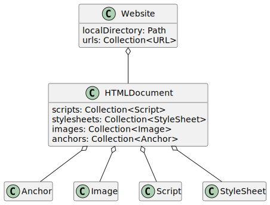
Take note of the first two classes:
Website- the website as a wholeHTMLDocument- a single HTML page (i.e., a single page within a site).
After the first two classes we have a class for each type of resource:
- Image
- Anchor
- Script
- StyleSheet
Note that while we need to represent collections of data… we are not interested in a specific data structure. The Collection is a placeholder for any data structure that can hold multiple items and be iterated over (e.g., List or Vector).
2.2 Adding Some Detail
Let us explore what each class needs to store.
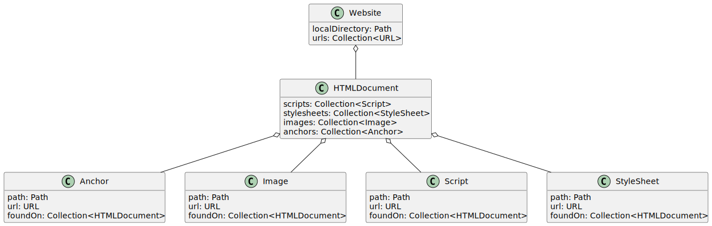
2.3 Representing Types
Now we need a way to represent the notion of:
- Internal
- Intrapage
- External
An Enumerated Type is perfect. An enum is similar to a boolean (true or false). While a boolean is restricted to yes (true) or no (false)… an enum is restricted to programmer-specified categories.
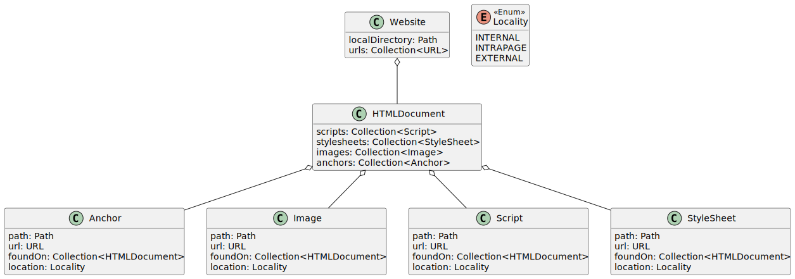
Take note of the new Locality box and additions to each of the resource classes.
2.4 Dealing with Duplication
The Resource classes are (at the moment) identical. Let us define a Resource base class.
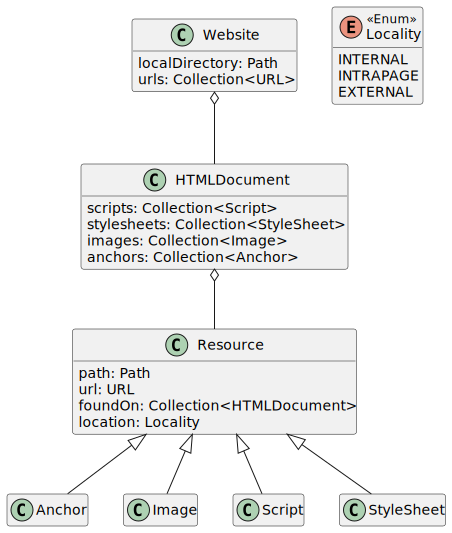
Now that we have factored out the common data members… it is tempting to remove Anchor, Image, Script, and Stylesheet. However, I am not comfortable doing so just yet. I have a few concerns, including
- Are there behaviors (e.g., member functions) that need to be captured?
- Will
abstractmethods or dynamic binding be useful during analysis? - Will class-specific
staticconstants be used?
Let us leave the classes for now. We can always remove them later.
2.5 Introducing ResourceKind
Have you noticed that files are not represented in our current model? We could introduce an “other” type. However, I think using Resource and adding another enum is a better choice.
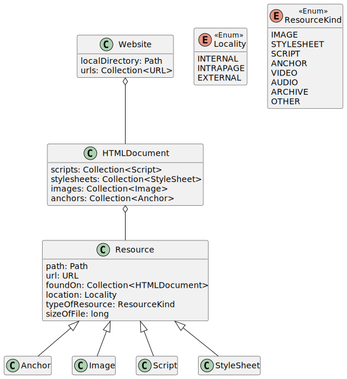
I will leave adding all options to ResouceKind up to you and your team.
Take note of the two new fields in Resource:
typeOfResource: ResourceKind- used to capture the type of file/resourcesizeOfFile: long- used to capture the file size (whether this in stored in KiB or MiB is an implementation detail)
2.6 Done for Now
Based on the Website Analysis Requirements Definition it appears that we have captured the structure of a website. It is safe to move on to capturing analysis, exceptions, and report generation.
3 Handling Analysis Details
Before starting this part of the lecture… I would like to discuss:
- lazy evaluation
- the Factory Pattern
- the Builder Pattern
3.1 Meet in the Middle
There is quite a bit of logic to implement. However, we are interested in:
- identifying the types of analysis that occur
- determining where each piece of analysis will occur
- splitting the analysis into manageable pieces/phases
To that end let us take a meet-in-the-middle approach to design. We already have the structure of a website (i.e., where we will store the data generated during analysis). Let us explore how to represent the various reports.
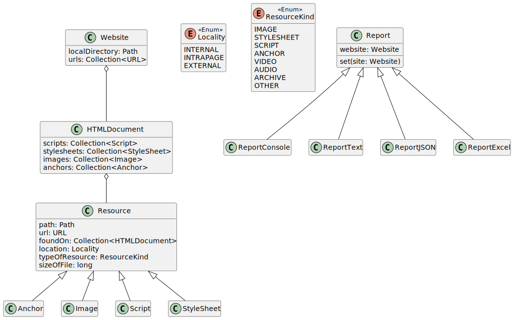
The reports will only examine the pieces of data that they need (and format that data for output). The actual extraction, parsing, and analysis operations (i.e., heavy lifting) should absolutely happen elsewhere in the software.
Take note of the Report.set method. I believe that a common report interface (via inheritance) is appropriate here.
3.2 Refining the Report Interface
Let us add a few methods to the Report interface.
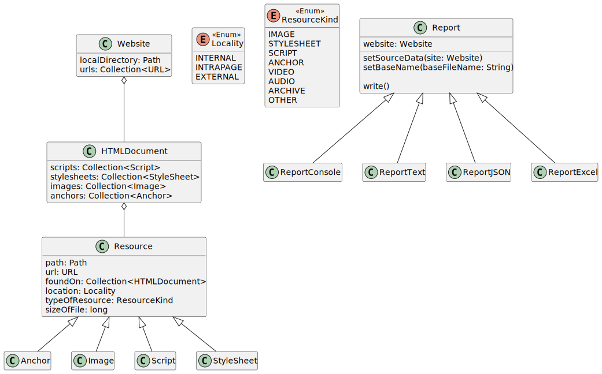
Take note of the three methods in Report:
setSourceData(site: Website)- renamedReport.setfor claritysetBaseName(baseFileName: String)- used to set the base report filename (e.g.,2023-06-23-165640)write()- used to generate and output the report
Note that write is intended a common public function that each report derived class will implement. The actual logic to generate a given report should happen before write is called, e.g., in a prepare method.
3.3 Inspiration from the C++ std::ostream, Java BufferedWriter & Python TextIO
I do not like the names of the Report classes. I would argue that these classes do not represent the reports being generated, but the person who would create these reports in a manual process.
Let us rename
ReporttoReportWriterReportConsoletoConsoleReportWriterReportTexttoTextReportWriterReportJSONtoJSONReportWriterReportExceltoExcelReportWriter
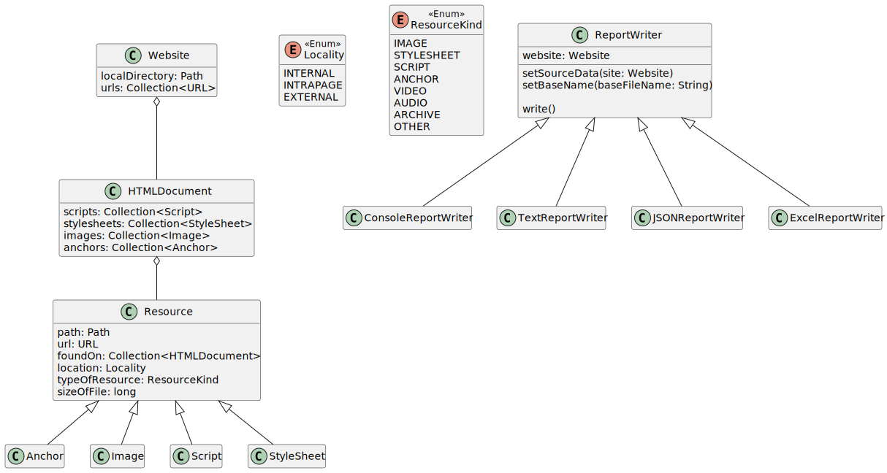
3.4 Something Does Not Fit
Have you been wondering abour ConsoleReportWriter? It is different from the other reports:
- It does not examine the
Websitedata. - It does not have a filename.
Perhaps it should really be a ReportManager class. A class that handles the:
-
Date and Time logic needed to set the basename for each report.
-
Coordination of sending all reports the same data, calling the
prepareandwritemethods.
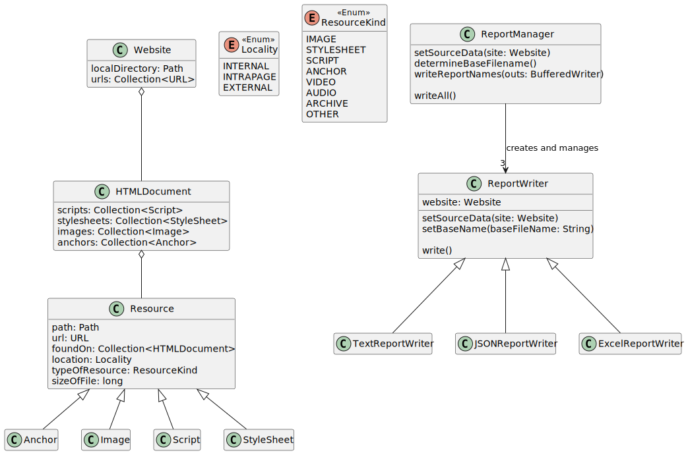
I am much happier with that. Note the four functions in ReportManager
setSourceData(site: Website)- same is in theReportinterfacedetermineBaseFilename()- take the current date and time and format it accordingly-
writeReportNames(outs: BufferedWriter)- output the filename for each file report. Note that theBufferedWriteris not necessary, but it will make development, testing, and debugging tremendously less frustrating. Trust me Bro. Yes, that is a WAN Show reference. -
writeAll()- Handle calling each of theReportWriterderived classes’writemethods.
3.5 Where is the Actual Analysis?
This is where the Builder Pattern will come into play. Let us start by adding two classes:
WebsiteBuilderHTMLDocumentBuilder
Note: Let us stick with “Builder” even though “Parser” might be a more “intuitive” name.
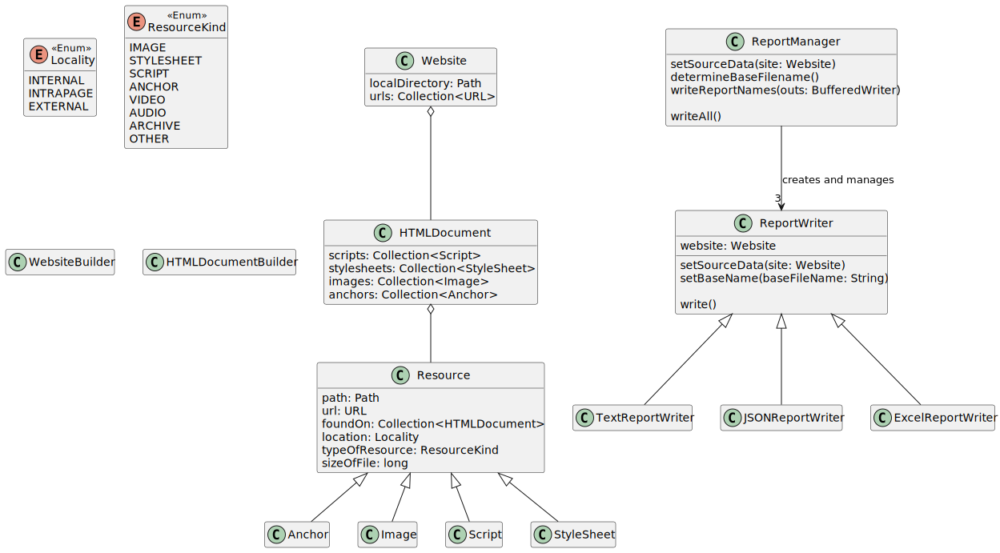
But… where do WebsiteBuilder and HTMLDocumentBuilder fit?
-
WebsiteBuilderwill be responsible for collecting all information needed to create aWebsiteobject:- one local directory path
- one or more URLs
-
HTMLDocumentBuilderwill be responsible for extracting all tags from a single file containing HTML content. This is where our HTML parsing logic will exist.
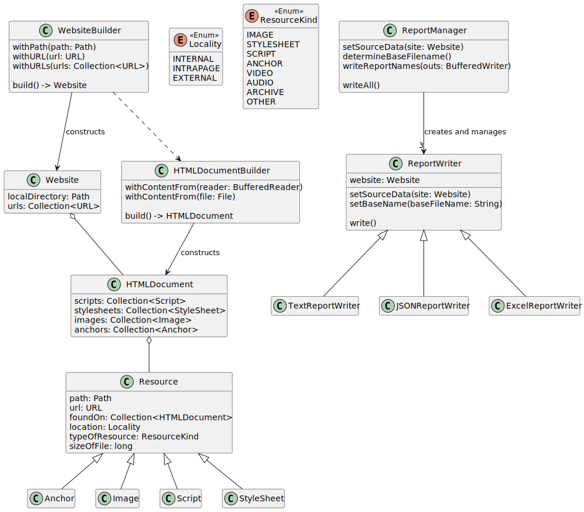
Take note of how WebsiteBuilder depends on HTMLDocumentBuilder. While the former may identify files to examine… the latter handles the actual parsing.
You will also notice a few with methods. This convention is used to supply arguments or values needed to create a non-trivial object (e.g., one that requires File IO). In general… complicated initialization (e.g. random number generation, file IO, nested object initialization) should not be done in a constructor. This is where the builder pattern can be particularly useful.
The actual object creation does not occur until build is called.
3.6 Adding a Few Extraction Methods
Let us add the resource extraction methods.
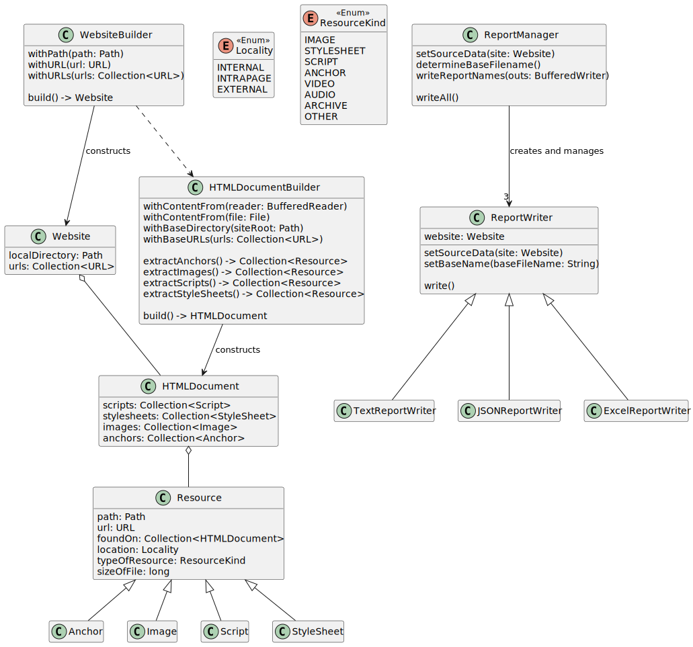
We have quite a few additions. The first two methods pass in the two pieces of data we need for path normalization and resouce classification:
withBaseDirectory(siteRoot: Path)withBaseURLs(urls: Collection<URL>)
The remaining four (4) methods handle extracting one type of Resource. While we might be able to factor out some common logic (and add a few utility functions)… these four public methods will simplify testing and debugging.
extractAnchors() -> Collection<Resource>
extractImages() -> Collection<Resource>
extractScripts() -> Collection<Resource>
extractStyleSheets() -> Collection<Resource>
Take note of how each method returns a Collection of Resource objects. I will write these functions so that they both:
- Store the
Resourcecollection as an attribute (private data member). - Return a reference to the collection for testing and debugging purposes.
4 Closing Remarks
-
Use
BufferedReaderfor input andBufferedWriterfor output. This will make testing a lot easier.For example…
BufferedReadercan use either aFileor aStringas a data source. This allows us to-
read a file in production code.
-
read a short piece of data from a hardcoded string in a unit test.
-
-
There are quite a few missing methods. However, the only classes we need to add are
Exceptions, utility classes (e.g., for path normalization), and a driver class to wrap:java public static void main(String... args) -
We could simplify the
Resourcehandling by removingAnchorand its sibling classes (and ~20% of teams in previous Summer Semesters have taken this approach). However, my approach would introduce aResourceFactoryto simplify the creation logic. -
We still need to make sure that each class follows the Java Class Checklist, including accessors and mutators.